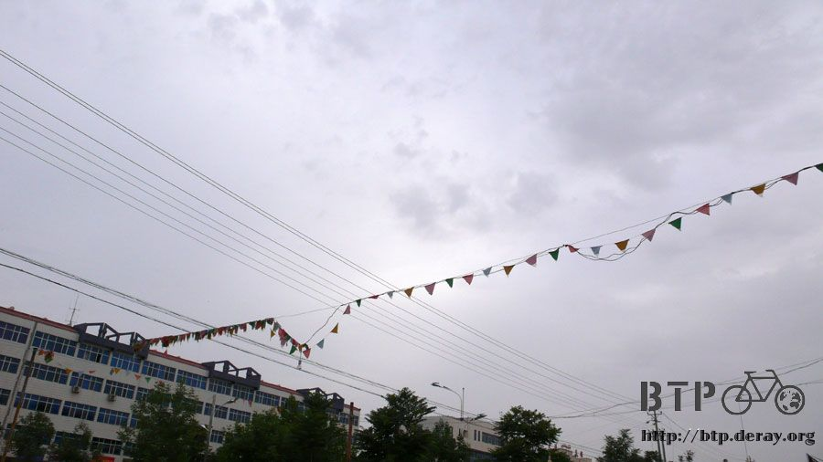
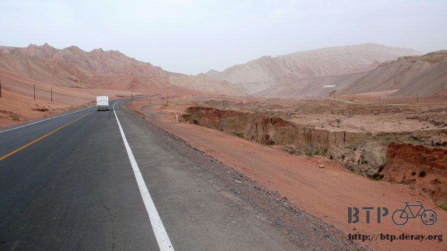
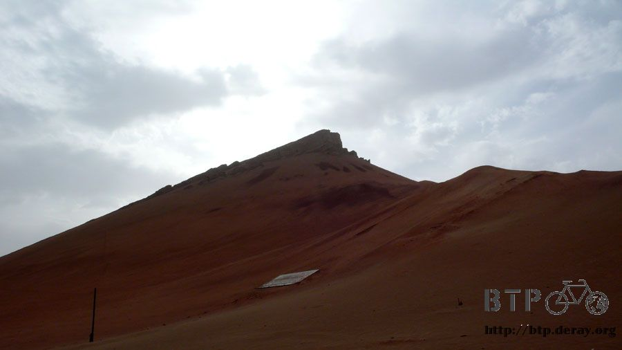
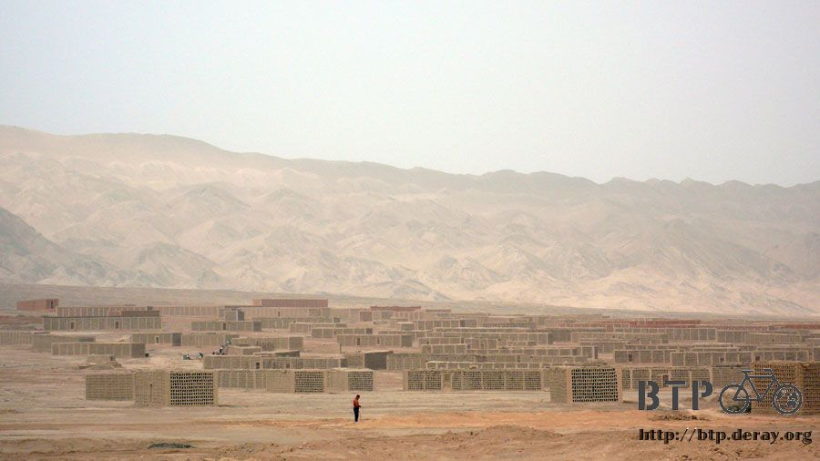
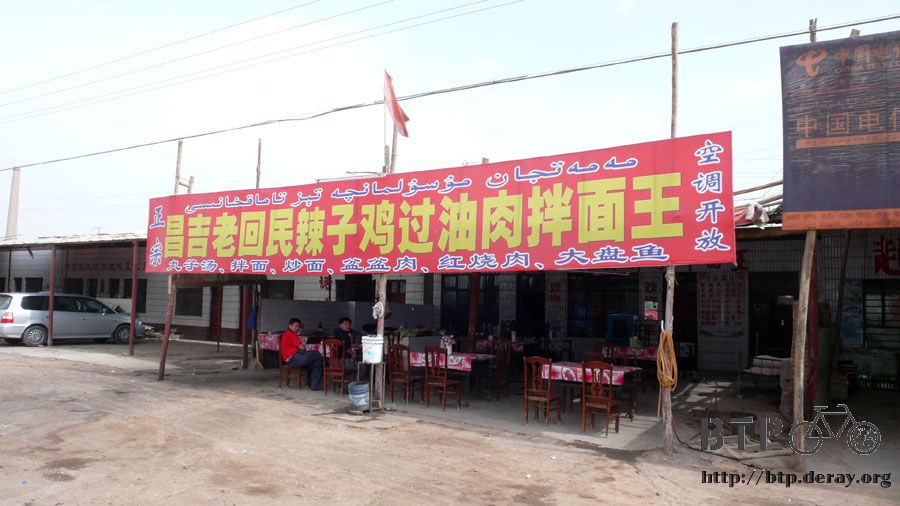
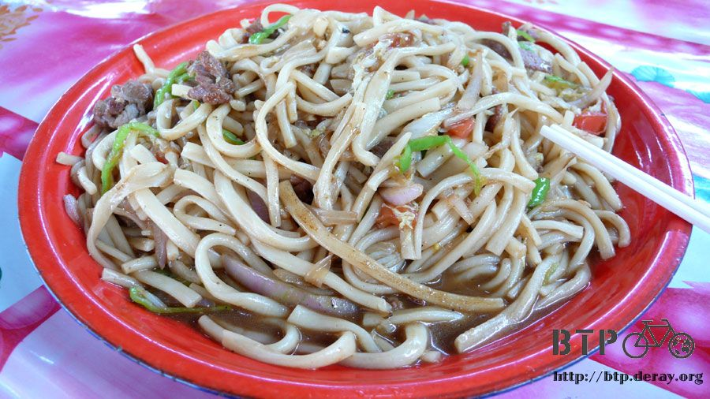
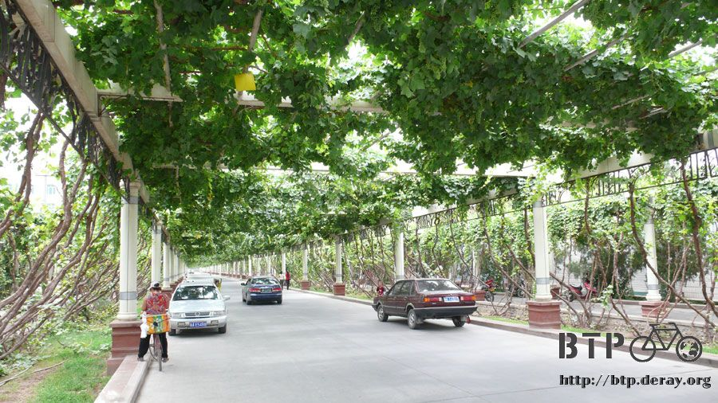
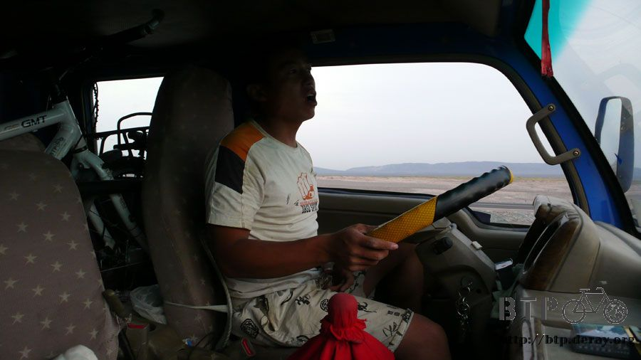
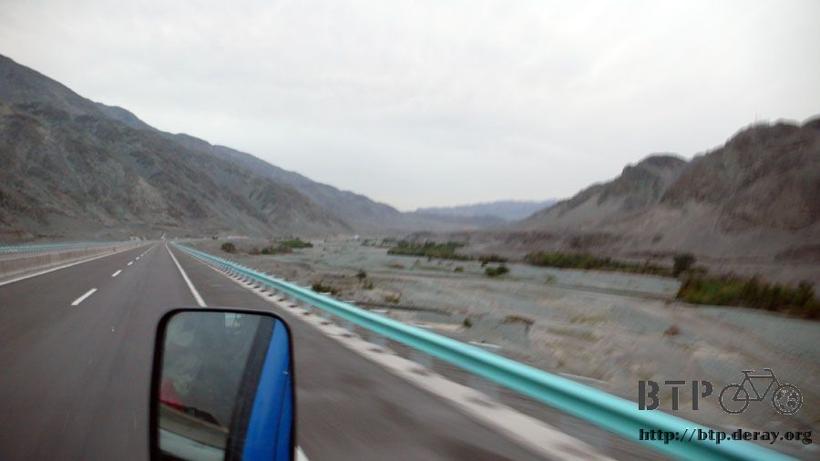
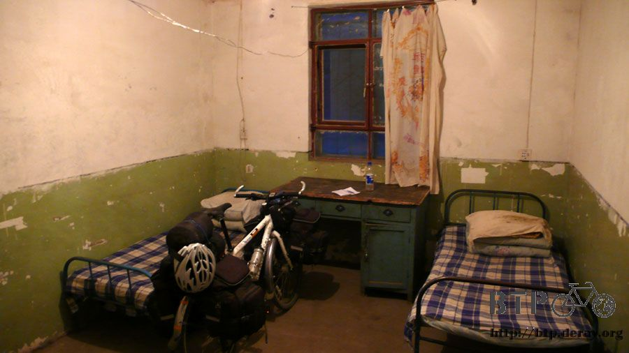

敗給十二級強風
老天爺聽到了我的請求，賞賜給我一個無比涼快的天氣，雲層很厚，太陽從兇猛的老虎變成可愛的小貓咪。

趁著涼快早上多騎一點路，今天目標是吐魯番，全中國地勢最低的地方，也是溫度最熱的地方。
一路上非常好走，因為吐魯番的地勢低，所以一路過去幾乎都是下坡。
因為陰天的關係，連平常都熱的要命的火焰山，今天也是輕輕鬆鬆的就經過了。



火焰山的山勢很漂亮，一連串起伏的雄偉山脈，山上連根草都長不出來，真的是名副其實的火焰山。

欣賞著美景，一邊慶幸自己很幸運的就通過了百里風口之稱的紅山口路段，也輕鬆的就過了火焰山。

尚未抵達吐魯番之前沿路上就已經都是賣西瓜、哈密瓜、葡萄乾的小販。


很奇怪的土製小格子屋，數以萬計的放在寸草不生的地方，完全猜不出來這是幹什麼用的。

騎自行車經過了這麼漂亮的火焰山，誰還要花錢去參觀火焰山呢？

中午時分抵達吐魯番，還蠻早就到了目的地，這個時候距離烏魯木齊還有一百八十公里。
本來是計畫從吐魯番騎兩天就可以抵達，但既然今天中午就到了吐魯番，等下午我再騎一小段，這樣明天就可以到烏魯木齊了。
在進入吐魯番市區之前的卡車司機休息區那邊吃了午餐，回民料理深得我心，於是就找了一間回民餐廳，

點了一份炒麵和丸子湯，兩種都非常非常的好吃，飯後休息了半個小時，才出發進入市區內。


吐魯番到了，歡迎光臨今天的目的地，該準備找旅館了嗎？

吐魯番也種了很多葡萄，而且已經結實纍纍，果實很小，看來就是拿來作成葡萄乾或是釀酒用的，也有一個景點是葡萄溝，又是國家四A級的喔。

葡萄多到可以當成行道樹來種，葡萄藤爬滿了支架，的確很有遮陽和美觀的效果，一樣是結實纍纍。

天氣很熱的吐魯番，出現了賣冰淇淋的小販，一支只要五毛錢，口味吃起來像是西瓜，很好吃！
老闆是維族，吃完好吃的冰淇淋，一句『拉合美特』不要吝嗇講。

在市區內消磨時間到下午三點半，本來應該住宿的我，又繼續騎上312國道，想說就算多騎個二、三十公里也好，
這樣明天的負擔就會比較輕鬆，一天之內即可抵達烏魯木齊。
這就是今天考驗的開始，我太看輕吐魯番到烏魯木齊這最後的一百八十公里路。
這裡面有著名的三十里風區，吹的全是超強的西北風和逆風，風速可達十二級，非常的驚人。
在進入風區之前，有告示牌寫著禁行自行車，國道為什麼禁行自行車？反正連高速公路都照騎不誤的我，
當然沒把它當一回事，照騎不誤。
這就是錯誤的種子，太小看告示牌，這段路禁行自行車是非常有道理的，因為自行車根本不可能騎的過去。
很幸運有一輛三輪車載滿傢俱像是要搬家一樣，我躲在它正後方二十公分處，托它幫我擋風。
但是這輛車在幫我擋了四公里的強風之後，就拐彎離我而去了。

旋即，風勢強的很誇張，一開始前面一小段路，還勉強可以稍微騎的動，但是左搖右擺的樣子很危險，
加上這一段路是沒有路肩的，我一個人就占據了一整個車道在那邊搖來晃去的騎車，
所有經過我的車輛也不敢叭我，而是非常小心的從旁邊繞過我，深怕會撞上我，或是我會被強風吹去撞他們一樣。
進入風口之後，騎車根本沒辦法保持平衡，隨時都會被強風給吹倒在地上。
這風是我這輩子所遭遇過最強的風，就算是颱風天的強風和這相比也是小兒科。
一開始很興奮，我朝著風吹來的方向大喊『很涼快！多吹一點！看能不能把我吹起來！』
下午五點開始，完全騎不動車，但是距離有城鎮的地方不知道還有多遠？
既然騎不動，那我下車用推的總可以吧，結果連用推的也是困難重重，側風和逆風永不停歇的吹著。
下車之後改用牽的，越往前走風勢就越強，必須隨時彎腰趴在小多身上，腰和右腳頂住小多，左腳則弓箭步支撐在地面，
這樣的姿勢才能讓小多和自己不會被吹倒。但是只能保持不被吹倒是沒有用的，我得前進才行。
風勢極大、而且風又乾燥，眼睛被吹得直流眼淚，只要累的張開嘴吧喘氣，口水就會被強風給吹飛出來。
當我覺得這樣的風已經是風口裡最強的了吧？但是越往前走，風勢只會越來越大，一絲一毫減弱的跡象都沒有。
當我低著頭半閉著眼睛牽車的時候，零點一秒鐘的時間，太陽眼鏡被強風颳走了，零點五秒鐘之後它墜落地面，
鏡片摔的和鏡架分離，我當然是想停好小多回去撿眼鏡，這是我唯一帶出來的一付有度數太陽眼鏡。
可是老天根本不給我任何機會，我就只能在接下來的三秒鐘，看著眼鏡繼續被強風颳著走，在滿地的碎石上打滾，
吹下路面的斜坡，再吹上五十公尺外對向車道的上坡，然後再往更遠的地方被颳走，從此離開我的視線和旅行。
心裡有點惶恐，連戴在頭上的眼鏡都會被颳走，小多也是即使我扶著，但也隨時就會被強風給狠狠吹倒的可憐模樣。
這段風口有辦法用走的走過去嗎？
趴著小多身上思考一下該怎麼辦才好，因為風向是側風，現在就算往回走也於事無補，被困在半路上了。
『小多不要怕，不過是風而已，沒什麼的，我們一起走過去。』
三十分鐘走不到一公里，全身的衣服都像是要被『北風和太陽』這個童話中的強烈北風給扒光一樣。
計畫是走到九點要是還沒地方住，也不知道下一個城鎮離多遠的話，就不盲目的走下去了，窩在涵洞裡躲一晚上再說。
放棄了攔車子喊救命的舉動，繼續牽著小多舉步維艱的前進。
這時候就算沒有小多，我自己一個人用走的，也是走不動，別說走不動，光是要你站在路面上三秒鐘都不可能。
扶著小多只是幫助我降低自己的重心和增加自己的重量，雖然速度極慢，但至少還能夠一步一步的慢慢走。
我絕對不要叫救命，我絕對不要攔車子載我，我可以走的過這一段。
從下午五點走到晚上九點，雙手緊握著把手，手腕痛的發疼。
想起之前當兵的時候在憲兵機車連，要騎1300CC的重車風光上路之前，得先推著它跑步。
YAMAHA Royal-Star是當時騎的車種，空油箱的情況下淨重是347公斤，推這樣的怪物跑步真得是很累人。
畫面回到在風口推著小多的我，小多加上行李大約50公斤，但是推起來比347公斤的重車還要沉、更難保持平衡。
難怪進入風口之前會掛著禁行自行車的牌子，但是就算知道了這段路會這樣，我還是會騎就是了。
九點過後，依然沒推到任何一個城鎮，也沒有看到關於城鎮的告示牌，所以開始要找一個涵洞窩一晚上。
抬起頭來，沒有眼鏡保護的眼睛已是被強風吹得淚流滿面，試著尋找遠方的涵洞時，看到一輛貨車停在前方兩百公尺處。
我很清楚的知道，這輛貨車之所以停下來，只有一個理由，他是來幫我度過這一段難關的救命恩人。
雖然小貨車在前方兩百公尺而已，這麼近的距離，我得推小多或走或停的花了五分鐘才到的了。
司機看起來很年輕，『你可真會挑時間呀！今天風可大呢！上車吧！』
兩個人相距一公尺，講話得用喊的才聽的見，話說出口的瞬間就被風給颳走，幾乎聽不見講話的聲音。
我停在貨車旁邊，問司機說前面離能住人的地方還有多遠？
至少還要十幾公里。
那再往前走風勢會轉小嗎？
越來越大，側風夾雜著逆風，又是上坡路，你推著自行車不可能過的去。

確認完這兩個問題之後，我就投降了，卸下小多的背包一個一個放進車子，然後把快被強風吹散的小多扛上去。
司機問我要去哪？我說要去烏魯木齊，但是風太大了，被困在這裡，一路上都用騎的，現在要搭車，雖然很感激你，可是心裡很不甘心。
司機叫做薑百松，今天才從吐魯番載了一車的西瓜要去烏魯木齊賣，所以他可以一路載我去烏魯木齊。
『達坂城離這裡還有多遠？順路的話載我到哪行嗎？我想自己從那騎到烏魯木齊。』
『達坂城往烏魯木齊的風也是大的很，騎自行車過不去，到時候你又被困在路上，我直接載你去烏魯木齊吧。』

百松小我兩歲，今年24歲，已經結婚了，小孩剛出生，現在才幾個月。
聽到他的小孩剛出生，我心裡就跟著高興起來，感覺很窩心。
坐在被強風吹的顫抖搖晃的車子裡，透過車窗看到的景色很美、風勢更強，有點遺憾自己不能騎過這段風口。
聊著天，百松很有趣，和我一樣喜歡自由，他是河南人，十五歲的時候就離家，到一個親戚朋友都沒有的吐魯番闖蕩討生活。
不喜歡給人家聘僱當工人，自己學著當老闆，雖然賺的不多，但是不用看老闆的臉色過日子，養家活口也還過得去。
除了拖運瓜類之外，他也和幾個農民合夥種植晚熟的哈密瓜，八月十五才收成，那時候全中國只剩下吐魯番有產哈密瓜，
價錢好的很，通通用空運送去北京賣，每個人分攤之後也有個七、八萬的收入。

過收費站的時候，我想出這筆錢，百松說這只是他的舉手之勞，叫我不用客氣，這麼客氣的話，這朋友就當的沒意思了。
因為剛剛我提到達坂城，所以他特地帶我繞經達坂城，想開車載我轉一轉，以免大老遠騎到這留下遺憾。
他說因為一首歌『達坂城的姑娘』所以全中國人都知道達坂城這個小鎮，
『沒來嘛，就覺得後悔一輩子，真的來過的人，則一輩子後悔。』
在快要離開達坂城之前，我請百松讓我在這裡下車，也許從這邊往烏魯木齊的路很難騎，但是我還是想靠自己騎到烏魯木齊。
很謝謝百松載著我渡過風口，讓我今天不至於睡在入夜後風更大、溫度更冷的涵洞裡，而是能住在達坂城。
千言萬語也比不過一句謝謝，『這麼客氣的話，這朋友就當的沒意思了。』這句話我記在心裡了。

搭百松的車開了約五十公里，到達坂城是晚上十點，第一要務是找個過夜的地方，問了幾間之後找到一晚上八元的招待所。

老闆娘說今天烏魯木齊下雨，所以達坂城跟風口就會颳大風，明天不知道天氣怎麼樣。
老闆喝得很醉，一直說我沒有帶身分證，明天他要叫公安把我抓起來，我則說你早點睡吧，明天我陪你喝兩杯。
八元的房間其實還算不錯，唯一缺點是離廁所和水龍頭很遠。

第一要務解決之後，再來就是第二要務，吃晚餐。
找了間燒烤店，在烤肉和冰啤酒上桌之前，學客人點了一碗酸奶，加上白砂糖，攪和攪和，吃起來不酸，淡淡的奶香，味道還不錯。

然後就是重頭戲香噴噴的烤肉啦，配上冰涼的啤酒，真是人生一大樂事。

明天要是依舊大風颳個不停，那我就在達坂城玩一天，如果是好天氣，那我也要在達坂城玩一天。
趕路是沒必要的，享受一下旅途中的點滴，比一天多騎五十公里路還要值得將來回味。
繼續閱讀：6.8 達坂城的姑娘
中國-人民幣－ 1：4.3 台幣
6.7 |
總計：47元 |
午餐炒麵、丸子湯15元、網吧一小時2元、西瓜冰淇淋1元、可樂3元、紅茶3元、住店8元、晚餐烤羊肉串5元、烤排筋5元、啤酒3元、酸奶2元、 |
|